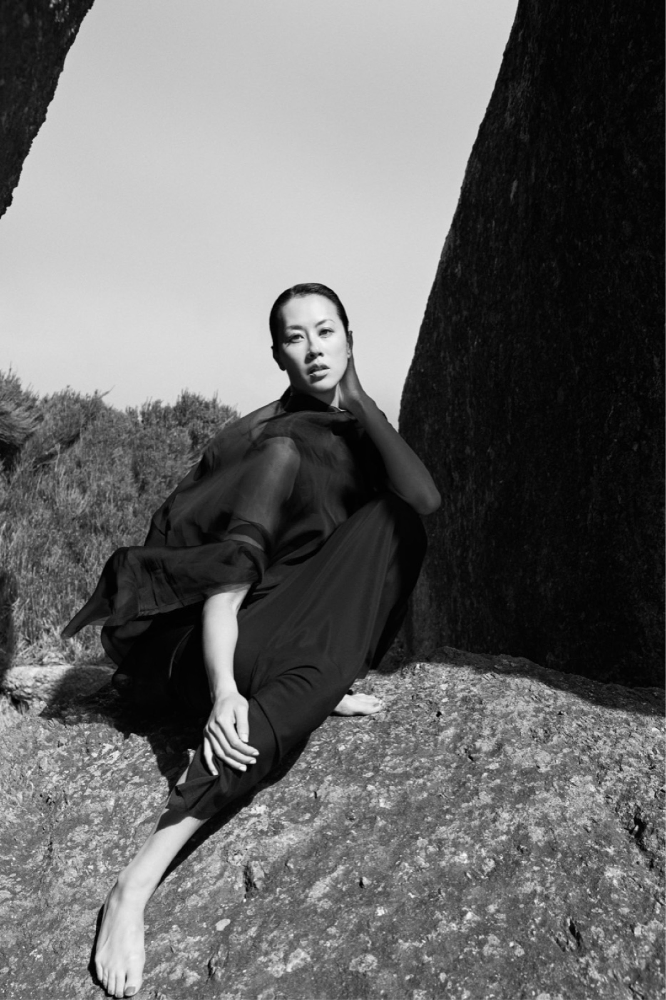
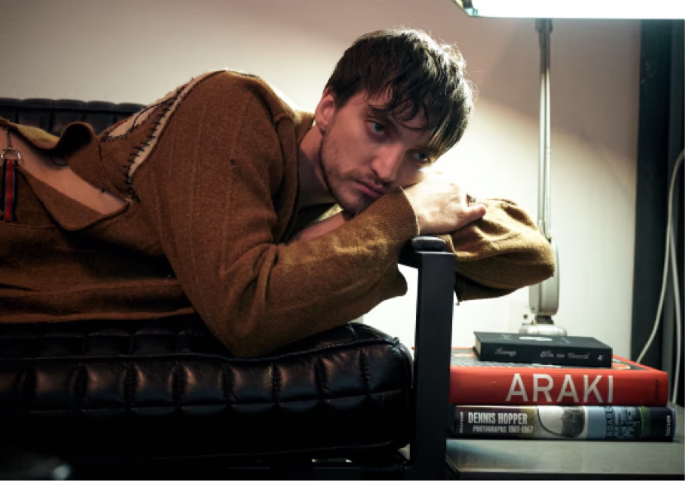
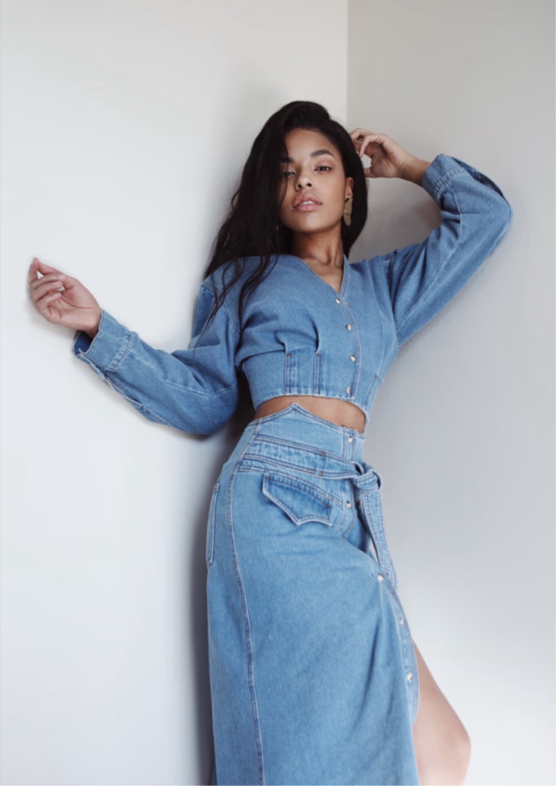
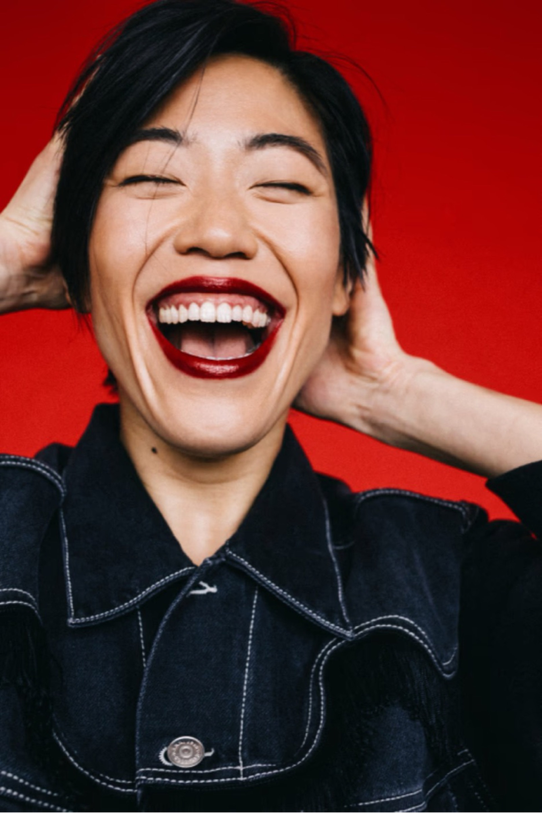
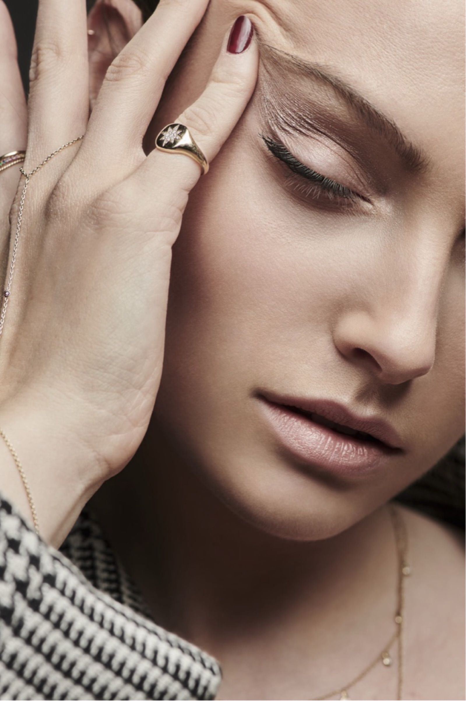

M Public Relations is a boutique PR agency specializing in media relations, image development and creative marketing for talent, film and brands. During my time at M Public Relations, I was pivotal in increasing capacity and service by introducing a brand component of offerings to our clientele that spanned across creative direction, visual brand identity, and supporting the overall operations of the firm.
Refining reputation and brand image for the entertainment and lifestyle industry
M Public Relations


Role
- Creative Direction and Production
- Public Relations Strategy
- Media Relations
Strategy
I managed the brand development service side of the agency. Over the course of 4 years, I produced and creative directed 90 publicity photoshoots with Vancouver photographers including: Liz Rosa, Alana Paterson, Noah Asanias, Mescondi, Los Angeles’ James Branaman, Mynxii White, G L Askew II, and Cape Town’s Nadia Von Scotti. Developed and managed full-cycle integrated communications campaigns representing diverse award-winning talent in film and television in Vancouver and Los Angeles. Led all in-house brand development services from visual strategies to creative direction and production, content and copywriting, website creation and social media initiatives, to full PR campaigns and festival and film premiere promotion.



Execution
During my tenure at M Public Relations, I played a key role in addressing this gap by introducing a dedicated brand development component to the agency’s portfolio.
This new service line included: Creative Direction: Designing and overseeing visual strategies that aligned with clients’ personal and professional brands. Visual Brand Identity: Crafting cohesive visual elements, from logos to overall aesthetics, that elevated client visibility.
Operational Support: Enhancing internal workflows to seamlessly integrate these services into the agency’s existing operations.
Result
Managed and executed full-cycle integrated campaigns for award-winning film and television talent, leading the entire process from ideation to execution, resulting in over 300 media placements.
Cultivated and nurtured relationships with over 500 journalists, contractors, vendors, and brands, and led coordination for press events, interviews, and creative shoots.
Managed 75 clients ranging from publicity campaigns to brand image development and visual brand identities.
Analyzed press campaign reports, maintained media databases, and provided training and supervision for contractors and interns, expanding our service capacity by 100%.